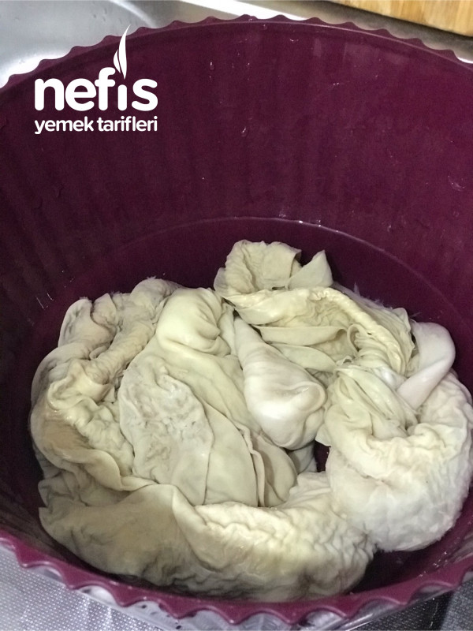
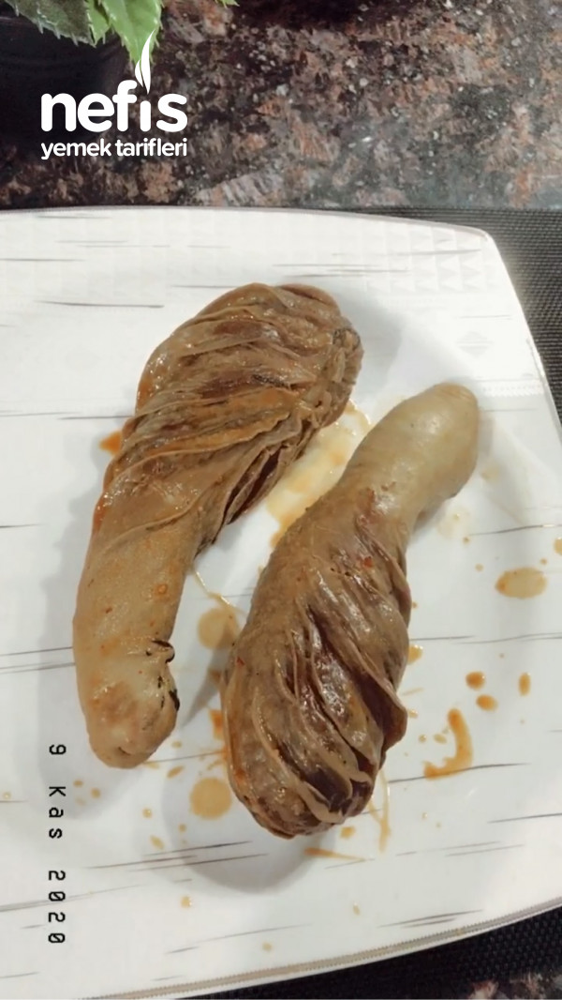

Şırdan Tarifi İçin Malzemeler

- 3 adet şırdan
- 2 su bardağı pirinç
- 2 adet soğan
- 1 yemek kaşığı biber salçası
- 1 çay kaşığı tuz
- 1 çay kaşığı karabiber
- 1 çay kaşığı kimyon
- 1 çay kaşığı pul biber
Şırdan Tarifi Nasıl Yapılır?

- İçi temizlenmiş şırdanın içi dışı bol suda yıkayınız.
- Temizlendikten sonra tuzlu suda 1 saat bekletilir.
- Soğanlar küçük küçük doğranarak pirinçle ve diğer malzemelerle birleştirilir.
- Şırdanın içine doldurulur ve dikilir.
- Tencereye dizilir yaklaşık 1 buçuk saat pişirilmeye bırakılır ,kaynayınca orta ateşte pişiriniz.
- Şırdan içini çok doldurmayınız pişince kendini çekecektir .
- 1 şırdana 3-4 yemek kaşığı pirinç koymanız yeterli olacaktır.